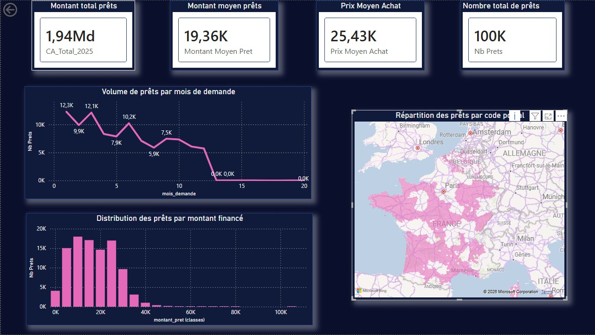
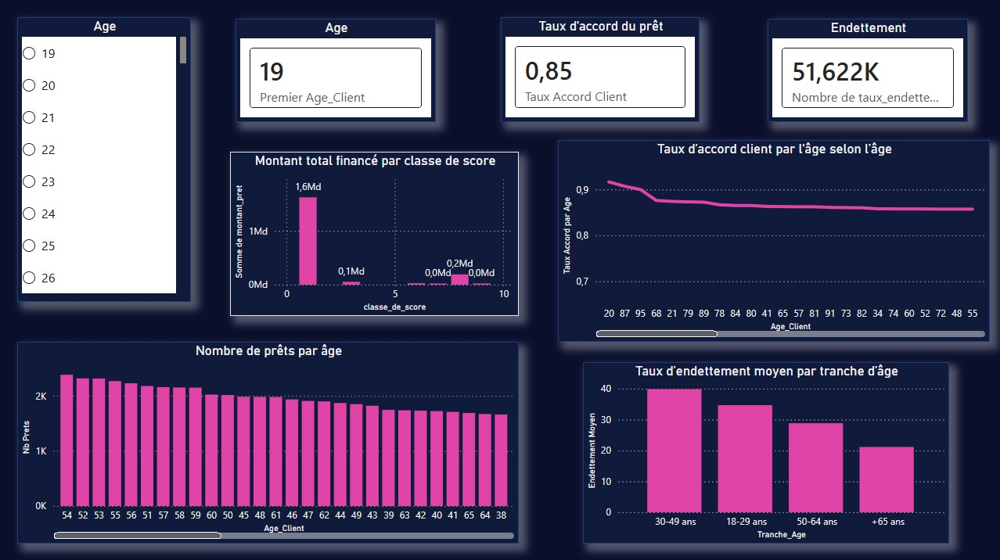
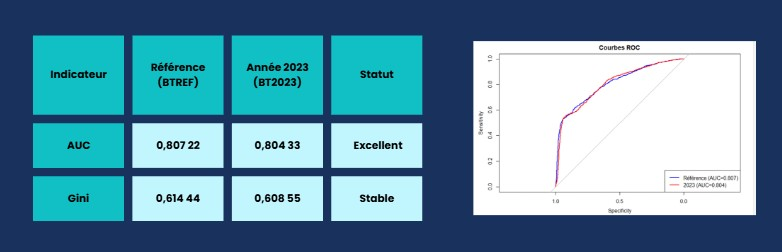
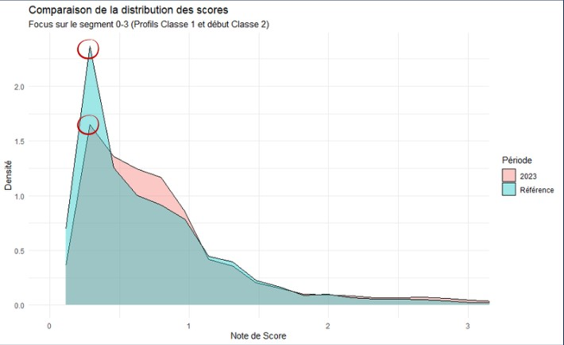

Contexte et objectif
Ce projet a été mené dans le cadre d'une étude approfondie sur l'activité d'octroi de crédit automobile pour le compte d'un établissement bancaire fictif. L'objectif principal était de comparer la performance d'un modèle de score de crédit entre une période de référence (BTREF) et l'exercice 2023 (BT2023), afin de vérifier sa robustesse, sa stabilité et sa capacité à discriminer les bons des mauvais payeurs dans un contexte de marché évolutif.
La réalisation de ce travail s’est étalée sur plusieurs mois, de septembre 2025 à janvier 2026. Il s'est articulé en deux temps : une première partie dédiée à la conception d'un tableau de bord Power BI, et une seconde consacrée à la rédaction d'un rapport de synthèse de type PowerPoint après la réalisation des analyses.
Données
L'analyse repose sur deux sources de données principales : une base de données de référence (BTREF), composée de 193 692 observations, et une seconde base portant sur l'année 2023 (BT2023), comprenant 277 300 observations. Ces fichiers décrivent des dossiers de crédit automobile à travers diverses variables explicatives relatives au profil des clients.
Ce que nous avons fait
La première étape du projet consistait à nettoyer et à structurer les deux bases de données. Il a également fallu traiter les valeurs manquantes, recoder les variables catégorielles en modalités exploitables et mener une exploration statistique complète. Cette phase a permis de comprendre la distribution des variables et de détecter d'éventuelles anomalies avant de débuter les analyses.
J'ai ensuite comparé la distribution des modalités des variables explicatives entre la période de référence et 2023, en calculant les écarts en points de pourcentage pour chaque catégorie. Cette analyse a mis en évidence cinq modalités présentant une variation supérieure à 5 %, dont la plus significative : une hausse de près de 7 points de la part des dossiers sans apport personnel. Cette modalité étant directement associée à un taux de défaut supérieur à la moyenne du portefeuille, elle explique la hausse de la note de risque moyenne, passée de 1,7 en période de référence à 2,7 en 2023. J'ai également analysé le déplacement du portefeuille entre les classes de risque, notant une baisse importante de la classe 1 (de 27,7 % à 17,7 %) au profit des classes intermédiaires 2 et 3.
Pour évaluer la capacité du modèle à séparer les bons et les mauvais dossiers, j'ai calculé et interprété plusieurs indicateurs de performance. L'AUC (aire sous la courbe ROC) s'établit à 0,804 en 2023, contre 0,807 en référence, ce qui témoigne d'une grande stabilité. Le coefficient de Gini associé (0,609) confirme un pouvoir discriminant très solide. J'ai également tracé et analysé la courbe de Lift, qui montre que le modèle identifie les défauts dès les premiers centiles de la population avec une pente initiale très marquée, preuve d'une capacité d'isolation des risques préservée. Par ailleurs, j'ai calculé l'Information Value (IV = 1,06), qui se situe bien au-delà du seuil d'excellence fixé à 0,5. Enfin, la distribution des scores entre dossiers sains (note moyenne de 2,2) et défaillants (note moyenne de 15,6) illustre concrètement la puissance de séparation du modèle : les futurs défauts reçoivent une note sept fois supérieure à celle des bons payeurs.
Pour terminer ce projet, j'ai réalisé un tableau de bord interactif. Il permet de visualiser la répartition du portefeuille par classe de risque, l'évolution des taux de défaut par modalité, la distribution des scores, ainsi que les indicateurs de performance clés du modèle. J'ai également conçu un document sur Canva permettant de résumer et d'interpréter les résultats obtenus lors des analyses effectuées avec R.
Aperçu des résultats



